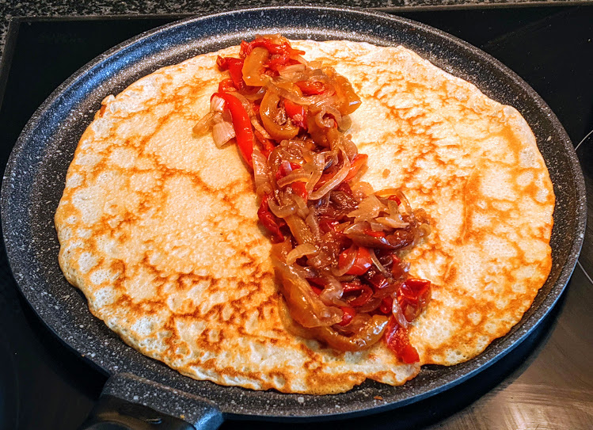

Crêpes familiales

Ici avec des poivrons poêlés au miel
Pour 2 personnes (environ 9 crêpes) :
- Trois œufs
- 180g de farine
- 50g de beurre
- 40cL de lait (froid)
- Une pincée de sel
- Faire fondre le beurre doucement.
- Pendant ce temps, tamiser la farine dans un saladier, et faire un puits au milieu. Casser les œufs dans le puits, puis mélanger au batteur électrique en faisant des petits tours pour incorporer la farine doucement.
- Ajouter le lait au centre progressivement, poursuivre les petits mouvements pour que ça forme une pâte liquide et homogène.
- Incorporer le beurre fondu et une pincée de sel, laisser la pâte reposer 2 à 3 heures.
- Faire chauffer une poêle en fonte (ou plusieurs, pour paralléliser le processus) bien fort. Graisser avec un peu d'huile neutre (e.g. de colza), que l'on ajoute et enlève entre chaque crêpe. Verser une louche de pâte sur la poêle, attendre que ça se solidifie et que ça prenne une jolie couleur sur le dessous, retourner la crêpe pour que ça ait une bonne tête partout, déguster immédiatement.
Remarque : on peut remplacer le lait par de la bière blonde pas trop forte, on peut dans ce cas en mettre un peu plus (par exemple un peu moins d'un demi-litre). C'est plus léger et croustillant avec de la bière, et plus gourmand avec du lait.
Remarque 2 : si on veut plutôt faire une pile de crêpes en avance et tout manger en même temps plutôt que les manger au fur et à mesure, une bonne façon de les maintenir au chaud est de les empiler entre deux assiettes creuses, le tout posé sur un saladier ou gros bol rempli d'eau bouillante.